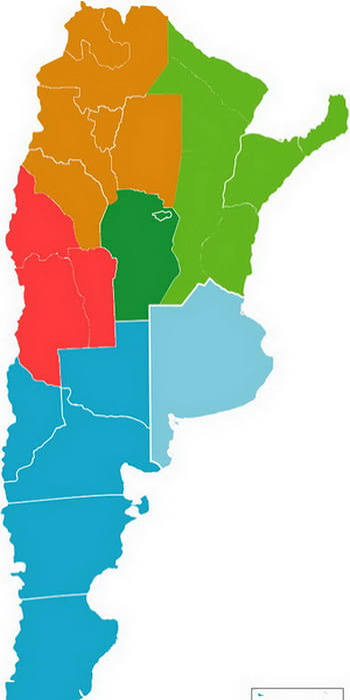
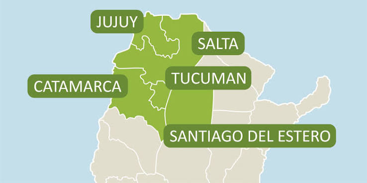
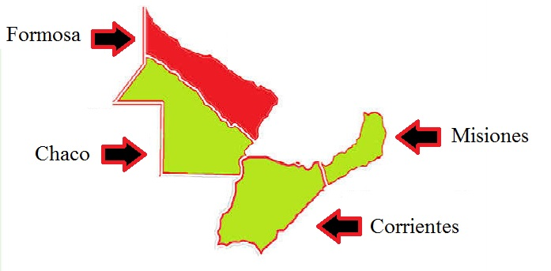
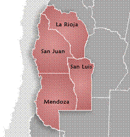
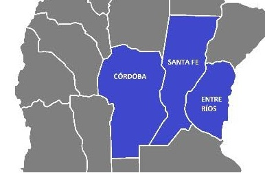

La República Argentina es el segundo país más grande de Sudamérica y el octavo del mundo en extensión, abarcando una superficie de casi 2.8 millones de kilómetros cuadrados. Su vasta geografía le otorga una diversidad impresionante, desde las imponentes cumbres de la Cordillera de los Andes en el oeste (donde se encuentra el Aconcagua, el pico más alto de América) hasta las extensas llanuras de la Pampa y la extensa costa atlántica en el este. Esta diversidad geográfica se traduce en una variedad de paisajes, climas y ecosistemas que definen las distintas regiones del país.
Encontraremos la imponente Cordillera de los Andes, que marca la frontera occidental y alberga el Aconcagua, el pico más alto de América; las extensas y fértiles llanuras pampeanas, el corazón agrícola del país; las mesetas patagónicas con sus estepas áridas y glaciares; y las selvas y humedales del noreste, con su rica biodiversidad.
Comprender la geografía argentina es fundamental para entender su historia, su economía, su cultura y la distribución de su población. A través de mapas y datos, exploraremos cómo esta geografía ha moldeado la identidad de una nación con contrastes tan marcados y una belleza natural inigualable.
La Argentina esta conformada por provincias las cuales son:
Las secciones que veremos hoy seran:

La Argentina es un país extenso y diverso, con una geografía que se despliega desde el trópico hasta los confines del continente antártico. Esta gran variedad de paisajes, climas y relieves ha dado lugar a la división del territorio nacional en distintas regiones geográficas. Cada una de ellas presenta características naturales, culturales y económicas propias, que las diferencian entre sí y aportan riqueza a la identidad del país.
El conocimiento de estas regiones no solo permite entender mejor el espacio argentino, sino también valorar la forma en que las personas se relacionan con su entorno. Desde las alturas andinas del Noroeste hasta las frías estepas de la Patagonia, pasando por las fértiles llanuras pampeanas, los bosques chaqueños, las selvas misioneras, las sierras de Córdoba y San Luis, y los valles cuyanos, cada región ofrece una visión distinta del país.
Estudiar las regiones argentinas permite comprender cómo influyen el clima, el suelo, el relieve y los recursos naturales en la vida cotidiana de las personas. Además, es una forma de reconocer la diversidad cultural que caracteriza a nuestro territorio y de apreciar el valor de cada una de sus partes dentro del conjunto nacional.
En este mapa se muestran las regiones del país de Argentina, las cuales son:
Las regiones geográficas argentinas se definen por varias razones, combinando criterios naturales y sociales, lo que permite entender mejor la diversidad del país.
En resumen, estas divisiones permiten organizar el territorio según unidades reconocibles —ya sea por su ambiente, su función económica o su historia— y facilitan el análisis del país desde múltiples perspectivas: física, social, económica y cultural.
A continuación, se presentan las principales regiones geográficas del país, cada una con sus características naturales, culturales y económicas:

"El NOA" se refiere al Noroeste Argentino, una región geográfica e histórica de Argentina que incluye las provincias de Jujuy, Salta, Tucumán, Catamarca y Santiago del Estero. Esta región es conocida por sus paisajes variados, desde montañas y desiertos hasta zonas húmedas, y por su rica cultura y tradiciones.
Ubicacion:
"El NOA" se encuentra en el noroeste de Argentina, limitando con Chile, Bolivia y una pequeña porcion con Paraguay.
Provincias:
La región está compuesta por las provincias de Jujuy, Salta, Tucumán, Catamarca y Santiago del Estero.
Paisajes:
El NOA presenta una gran diversidad de paisajes, incluyendo montañas, como la Cordillera de los Andes, La Puna, Valles, como los Valles Calchaquíes y zonas húmedas como las Yungas.
Cultura: La región tiene una rica historia y cultura, con las influencias indígenas y coloniales, que se reflejan en su música, gastronomia, artesanías y festividades.
Turismo.
El NOA es un destino turístico popular, conocido por sus paisajes, pueblos históricos, como Cachi y Purmamarca, y atracciones como la Quebrada de Humahuaca y el Tren a las Nubes.

Ubicacion:
"El NEA" se refiere a la región del Noreste Argentino, una de las regiones histórico-geográficas en las que se divide Argentina. Esta región comprende las provincias de Formosa, Chaco, Corrientes y Misiones.
Provincias:
La región del NEA, incluye las provincias de Chaco, Corrientes, Formosa y Misiones.
Paisajes: "El NEA" (Nordeste Argentino) ofrece una gran diversidad de paisajes, Corrientes, Chaco y Formosa se destacan con sus llanuras pero Misiones se destaca por sus mesetas y sus sierras bajas.
Cultura:
La cultura del NEA (Noreste argentino) es rica y diversa, influenciada por la geografía subtropical, la presencia de pueblos originarios y la inmigración. Se manifiesta en música como el chamamé, gastronomía con influencia guaraní y brasileña, y tradiciones religiosas que combinan elementos católicos y ancestrales. La región también se destaca por su producción agrícola y forestal.
Turismo:
La guía turística más popular del NEA (Noreste Argentino) es probablemente aquella que destaca las Cataratas del Iguazú, en la provincia de Misiones, como su principal atractivo. Además, otras guías populares incluyen información sobre los Esteros del Iberá, en Corrientes, y las Ruinas Jesuíticas de Misiones.

Ubicacion:
Se encuentra en el centro-oeste de Argentina, al pie de la Cordillera de los Andes.
Provincias: Mendoza, San Juan y San Luis.
Paisajes:
Dominada por la imponente Cordillera de los Andes, con picos nevados, valles cordilleranos y el Cerro Aconcagua (el más alto de América). El clima es árido y seco, con grandes amplitudes térmicas, lo que favorece el cultivo de la vid en oasis irrigados por el agua de deshielo.
Cultura:
La vitivinicultura es el eje cultural de la región, especialmente en Mendoza. La Fiesta Nacional de la Vendimia es su máxima expresión. La música y danzas cuyanas (cueca, gato) son parte de su identidad.
Turismo:
La región de Cuyo, en Argentina, ofrece una gran variedad de atractivos turísticos, incluyendo paisajes montañosos, bodegas de vino, parques nacionales y actividades al aire libre. Se destaca por su cultura cuyana, con influencia indígena y europea, y su rica gastronomía.

Ubicacion:
La Región Centro se encuentra, como su nombre lo indica, en el centro-este de la geografía argentina. Limita al norte con el Norte Grande Argentino (NOA y NEA), al este con Uruguay, al sur con la Provincia de Buenos Aires y la Patagonia, y al oeste con Cuyo. Se ubica en el corazón de la Pampa agro-exportadora, siendo un punto geoestratégico clave.
Provincias:
La region centro esta compuesta por 3 provincias: Córdoba, Santa Fe y Entre Ríos.
Paisajes:
Predomina la llanura fertil de la Pampa Humeda con variaciones
Cordoba: Se destaca por sus Sierras de Cordoba valles rios y paisajes serranos que contrastan con la llanura.
Santa Fe: Predomina la llanura agricola y ganadera hacia el este tiene un extenso sistema de humedales islas y riachos del rio Parana.
Entre Rios: Es una provincia entre rios Parana y Uruguay con lomadas suaves palmares y numerosos cursos de agua.
Cultura:
Tradicion Pampeana y Gauchesca Hereda del gaucho el folklore y el mate.
Influencia Litoraleña En Santa Fe y Entre Rios muy ligada a los rios el chamame la pesca y la gastronomia de rio.
Cosmopolita y Universitaria Ciudades como Cordoba y Rosario son grandes centros urbanos universitarios y culturales con fuerte vida artistica e influencia de la inmigracion
Festivales:Es cuna de importantes festivales de folklore como Cosquin y Jesus Maria
Turismo:
La Región Centro de Argentina, compuesta por las provincias de Córdoba, Entre Ríos y Santa Fe, ofrece un amplio abanico de atractivos turísticos, desde paisajes naturales hasta importantes centros culturales e históricos. El turismo en esta región se destaca por su diversidad, con opciones para actividades al aire libre, turismo rural, turismo religioso y mucho más.